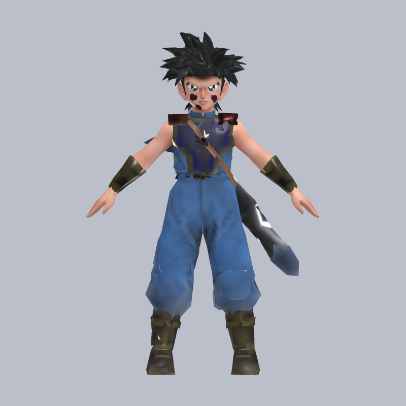
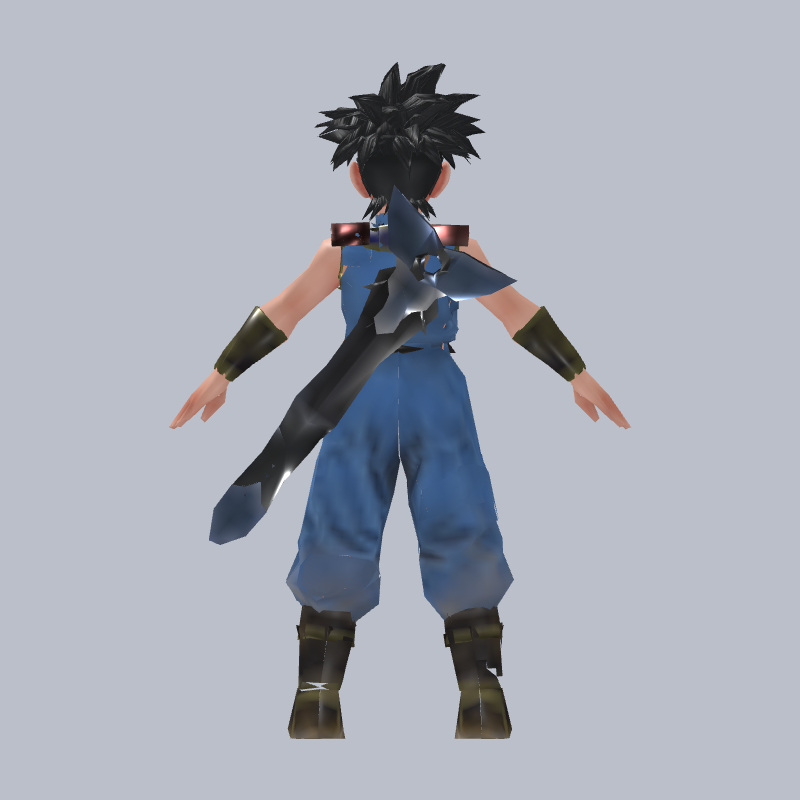
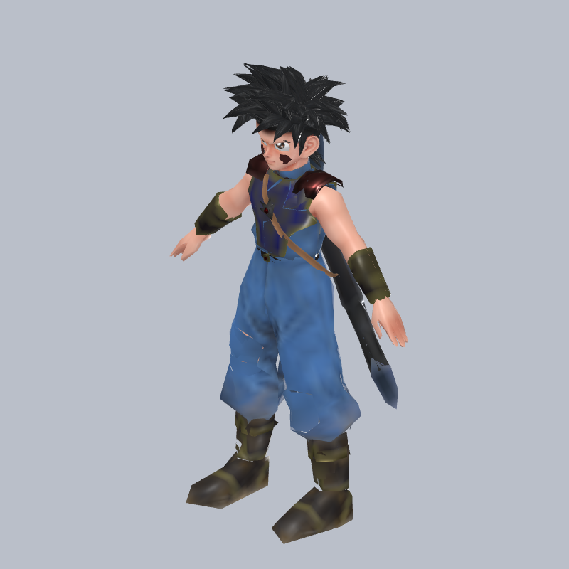

技術畫面已完成；等待 owner 視覺決策。此頁不會登錄後台模型，也不代表已上架或已部署。
來源候選 SHA-256：bdd72532896ff92db3f18238771fc63e0139f845068bb78a678ca7bede9d999d7,930 面／6 draw／256px／159 joints／0 原生動作。
bdd72532896ff92db3f18238771fc63e0139f845068bb78a678ca7bede9d999d


